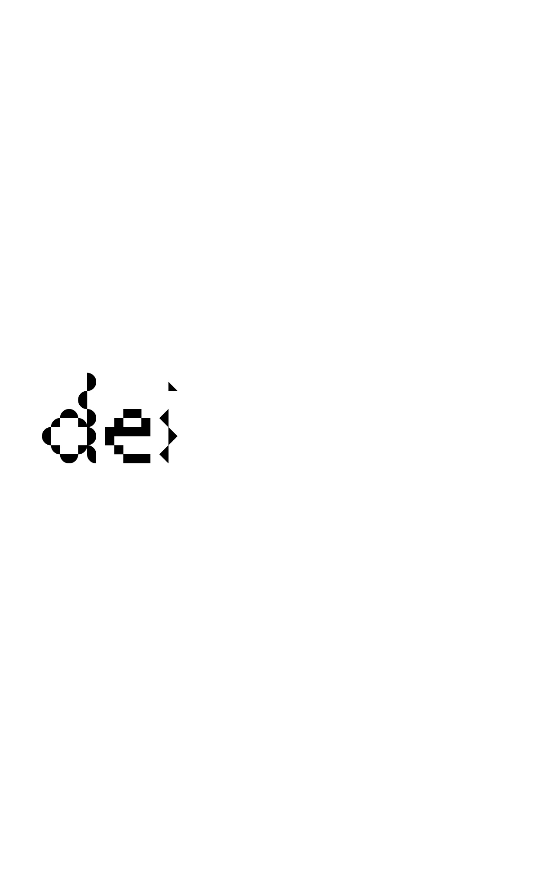
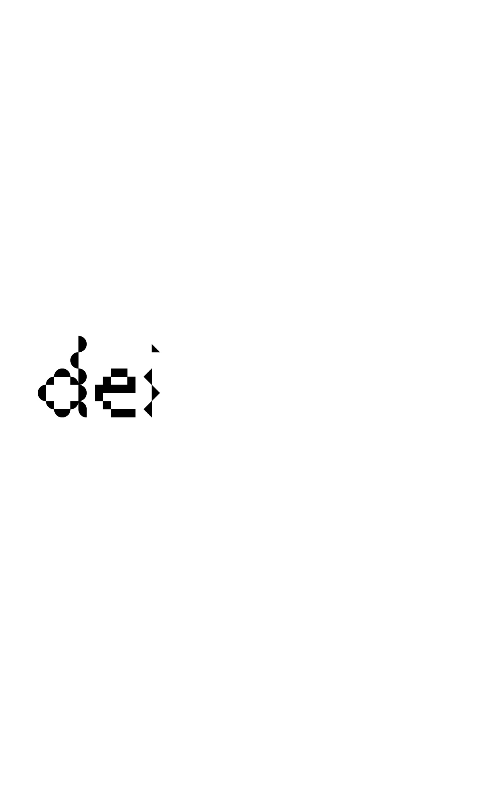

design,
arte e
tecnologia
“DAT: Design, Arte & Tecnologia” é um ciclo de conferências, conversas e workshops. Que se vai realizar anualmente no âmbito dos cursos de Licenciatura e Mestrado em Design e Multimédia da Faculdade de Ciências e de Tecnologia da Universidade de Coimbra. A primeira edição decorrerá em Abril de 2018, e terá a duração de 2 ou 3 dias que poderão ter lugar, em vários locais da cidade de Coimbra, como por exemplo no auditório do Museu da Ciência, no DARQ e no DEI. Esta acção de divulgação pública dentro e fora da Faculdade pretende não só mostrar o trabalho de diferentes profissionais cujo trabalho é amplamente reconhecido, como contribuir para a divulgação do cursos, os primeiros nesta área leccionados na Universidade de Coimbra. O programa é constituído por convidados de diversas áreas (Design Gráfico, Tipografia, Design de Interacção, Web Design, Arquitectura, Teoria do Design, Arte, Ilustração, Arte computacional, Cinema, etc.)
11
ma rço
12
ma rço
13
ma rço
Intervenientes
Mário Feliciano
Mário Feliciano (born 1969) studied graphic design at IADE (Lisbon) until 1993.
Before finishing his degree he started to work as a graphic designer at Surf Portugal magazine,
where he stayed there as art director during the next seven years. In 1994 he founded his design
studio (Secretonix) that produced a wide range of design projects from editorial to corporate design.
After having commissioned one typeface for Adobe (called Strumpf) and after publishing some of his early
work in other foundries, in 2001 he creates the Feliciano Type Foundry and starts to publish his own
designs and creating custom typefaces for clients around the world. He is a member of ATypI since 1997. In
2006 Mário was the local organiser of the annual conference held in Lisbon. He is also a member of AGI
(Alliance Graphique Internationale) since 2009. He is the author of several custom typefaces, such as:
Expresso (for the Portuguese weekly newspaper Expresso), Sueca (for the Swedish newspaper Svenska
Dagbladet),
Majerit (for the Spanish newspaper El País) and BesSans for Banco Espírito Santo. Feliciano's typefaces have
been used by a wide range of clients around the world, from big corporations to renowned international
publications such as Newsweek, The Sunday Times or Elle Magazine. His most popular typeface is Flama that
is used as a customised version on the Portuguese Passport and Citizen Card along with his other typeface
Merlo. In the recent years Mário has been working on expanding FTF's library and giving typographic
consultancy.
Luna Maurer
Luna runs the Amsterdam-based design studio Moniker with Roel Wouters. (They founded it in 2012 with Jonathan Puckey.) Moniker “explores the characteristics of technology, how people use it, and how it influences people’s daily lives. "They’ve taught media courses at the Gerrit Rietveld Academy, the Sandberg Institute and at Yale University, and they regularly give workshops and lectures around the world. Moniker, together with Edo Paulus, wrote Conditional Design, a manifesto and “experimental playground” that they have said is “based on the notion that designing a logic-based environment within which results take shape are more interesting and fruitful than a directly designed object.” They tested these ideas during weekly workshops, which were then posted online. The Conditional Design Workbook was published in 2013 by Valiz. Here, Maurer discusses what it means to break down complicated ideas, the importance of having a guiding manifesto, and the difference (or lack thereof) between an artist and a designer.
Thomas Castro
Thomas Castro founded LUST with Jeroen Barendse, and Dimitri Nieuwenhuizen, a multidisciplinary graphic
design practice established in 1996 by , based in The Hague, Netherlands. LUST works in a broad spectrum
of media including traditional printwork and book design, abstract cartography and data-visualisations, new
media and interactive installations, and architectural graphics. Moreover, LUST is deeply interested in
exploring new pathways for design at the cutting edge where new media and information technologies,
architecture
and urban systems and graphic design overlap.
This fascination led to establishing LUSTlab in the summer of 2010. LUSTlab is more than a new form of
Research
& Development. LUSTlab goes further than observing, inventing and producing, by means of forming a platform
where
knowledge, issues and ideologies can be shared.
LUSTlab researches, generates hypotheses and makes unstable media stable again. The future of digital media
lies in the design of its use. Humanizing the unhuman, bringing the internet down to earth and finding the
missing link between the digital and the physical. The outcomes vary from (strategic) visions to new
communication tools, man-machine installations and physical products using digital content.
 

 



3000-272 Coimbra
museudaciencia.org

239 854 350
Departamento de Arquitectura
Universidade de Coimbra
R. Colégio Novo,
3000-143 Coimbra
Departamento de Engenharia Informática
Universidade de Coimbra
Pólo II - Pinhal de Marrocos,
3030-290 Coimbra